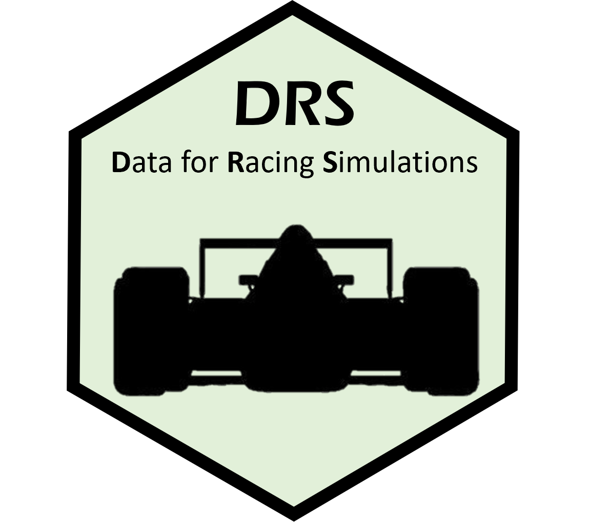
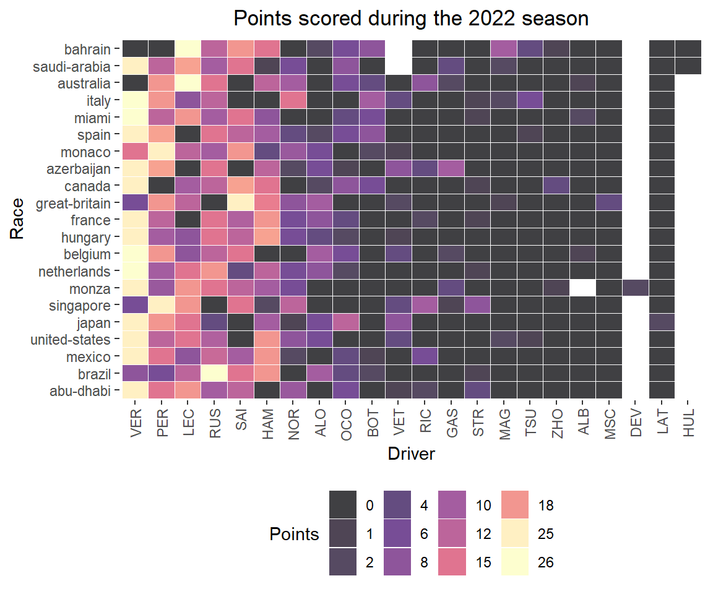
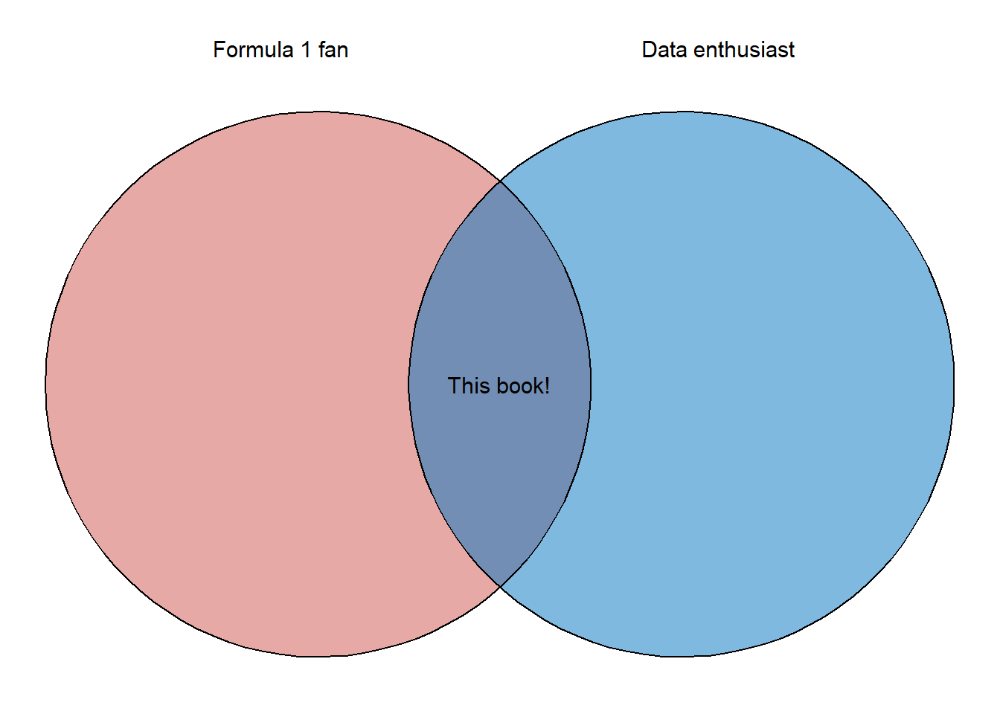

Visualizing Formula 1 Data in R
2024-02-20
Chapter 1 About the book
This is a book for anyone that finds themselves located within the fairly obscure intersection of the data enthusiast-Formula 1 fan Venn diagram (see Figure below: 1.9 Data Visualization)). The overarching goal of the book is to provide a gentle introduction to analyzing Formula 1 data using the R programming language. It includes some brief commentary on the sport of Formula 1, lots of data visualizations, and R code used to create each plot. While this book is primarily written for people interested in data visualization using the R programming language, I do hope that some of the nerdier Formula 1 fans will find these data visualizations interesting.
1.1 Cover Art

The cover art is the work of Alison Gaspard. Alison is a tattoo artist, BFA in studio art, and former Visual Arts/Art History educator located in Houston, Texas.
You can find Alison here: https://www.alisonlenayfineart.com/
1.2 About me
TLDR: Casan Scott, Ph.D., Senior Data Scientist
More information: I am a bit of a nomad, professionally. Academically, I graduated with B.S. and Ph.D. degrees in environmental science and my Ph.D. research focused on the toxicology of fish. Naturally, I decided to not use my doctorate degree and became a data scientist! I fell in love with the R programming language during graduate school, and decided I would rather analyze data than collect it. Over the past five years, I’ve worked as a data scientist in both the public and private sectors. At times, I also contribute to research on human performance topics. Outside of my nerdier professional pursuits, I enjoy competing in powerlifting, trail running, reading westerns, and hanging out with my wife and dogs.
1.3 Why did I write this book?
To scratch my own itch per se. Formula 1 is actually a very complicated sport, and while learning about it I had lots of questions: Do practice times mean anything? Does the qualifying time predict race pace? How much do the cars improve each year? Why is Red Bull so good in Mexico City? Of course, there were plenty of answers to these questions online, but I really wanted to try and answer some of these questions myself. So, this book documents my attempt at doing so. Along the way, I include the code to create each plot and some brief annotations about the functions used.
1.4 Organization of this book
I aimed to loosely organize this book like a typical Formula 1 weekend: (1) practice data, (2) qualifying data , and (3) results from the Grand Prix. For the most part, I try to summarize the historical data, visualize possible trends in the data, explore important differences, plot potential correlations, and perhaps build a model that can explain some relationship(s) that seems interesting. Along the way, I may pursue a tangent or two. Each chapter begins with a racing-centric introduction, followed by various analyses. The organization of chapters in this book are as follows:
- Chapter 2: Introduction to Formula 1
- An introduction to Formula 1 racing and the sessions in a weekend
- Pulling data using the drs package
- Basic visualizations of practice data
- Chapter 3: Qualifying
- Plotting distributions of qualifying data
- Visualizing qualifying times over time
- Chapter 4: Relating practice times to qualifying times
- Simple linear regression models
- Confidence intervals
- Interactions
- Chapter 5: Drivers
- Using heatmaps to visualize race results for drivers
- Comparisons between teammates
- Chapter 6: Race Results
- Starting position vs Final Placing
- Ordinal regression models
- Plotting ordinal regression results
- Chapter 7: DNFs
- Rates of DNFs (Did not finish)
- Logistic regression models
- Interpreting logistic regression models
- Chapter 8: Champions
- Visualizing championship fights
1.5 R
R is a programming language that is largely used for statistical analysis and data visualization. One of R’s biggest strengths is the ease with which high quality data visualizations can be be produced. This feature is what drew me to the language back in 2013, and is the reason that I am able to write this book!
For information on R, visit this link: https://www.r-project.org/about.html
1.6 ggplot2
I am assuming that you have some experience using the R programming language. If you have never used R before, you will quickly become very confused! This entire book is based on the ggplot2 package in R. ggplot2 is a package used for producing statistical and other data graphics. What makes ggplot2 unique is it has an underlying grammar, based on the Grammar of Graphics (Wilkinson 2005). This attribute allows you to create graphs by combining independent components to suit your particular problem. That may seem like a trivial distinction, but it makes ggplot2 very powerful!
Note: At times, I may refer to ggplot2 as simply ggplot. If that is annoying… apologies in advance!
1.7 The tidyverse
Throughout this book, I rely on the tidyverse. The tidyverse is actually a collection of other packages that share common data representations and design structures. This enables these packages to work together very conveniently. For instance, I nearly always use functions from the dplyr package to wrangle data prior to plotting with ggplot2. You can install the tidyverse core packages with a single command:
# Install the package from CRAN
install.packages("tidyverse")
# Load the package
library(tidyverse)The core pakcages in tidyverse are:
- ggplot2, for data visualization.
- dplyr, for data manipulation.
- tidyr, for data tidying.
- readr, for data import.
- purrr, for functional programming.
- tibble, for tibbles, a modern re-imagining of data frames.
- stringr, for strings.
- forcats, for factors.
- lubridate, for date/times.
Aside from ggplot2, I most heavily use dplyr in this book. There are six key dplyr functions that can solve most data manipulation challenges:
select(): subset columns from a dataframe. In other words, you use this to choose variables by name.filter(): filter the dataframe by values of a variable. This can be both numeric (i.e. age > 21 years) or categorical (i.e. month == June).arrange(): order the rows of the dataframemutate(): create a new variablesummarize(): collapse values down to a summarized metric (i.e. mean, minimum, maximum).group_by(): operates any of the previous functions on a group basis (i.e. a grouped mean).
I highly recommend this book chapter for more information on dplyr basics:
https://r4ds.had.co.nz/transform.html
For a thorough introduction to the tidyverse, read the entire fantastic book:
1.8 Data

The data used in this book was pulled from formula1.com. To make it easier for readers to use this data, I developed the drs (Data for Racing Simulations) R package. If you currently follow Formula 1, you will recognize that DRS also stands for Drag Reduction System, which is a crucial component of Formula 1 cars that opens space in the rear wing thereby reducing drag. The drs R package utilizes functions from the rvest and dplyr packages to scrape and tidy data from the formula1.com website. It is designed to scrape data for all Grand Prix weekends during a given year. Each function returns a dataframe that you can then use for analysis and visualizations.
Notes about a Formula 1 Grand Prix Weekend
A Grand Prix weekend consists of practice sessions, qualifying, and a race. Additionally, some weekends will also include a sprint race (an abbreviated sprint race that is typically about 1/3 the length of a normal race). A typical Formula 1 weekend begins with three practice sessions. The first two practice sessions (FP1 and FP2) are held on Friday. On Saturday, the third practice session (FP3) is held, followed by Qualifying. Qualifying determines the grid for the race on Sunday. Currently, there are three heats in qualifying (Q1, Q2, and Q3). All cars compete in the first heat (Q1), and the top 15 fastest times advance to the 2nd heat, Q2. From there, the top 10 fastest times during heat 2 advance to Q3 (heat 3). The starting grid is determined by a driver’s final qualifying position (pending penalties). The race takes place on Sunday.
drs currently consists of four scraping functions:
practice_session_scraper(): Scrapes the best times for a given practice session.qualifying_scraper(): Scrapes the best qualifying times during Q1, Q2, and Q3.starting_grid_scraper(): Scrapes the final starting grid positions for the Grand Prix.race_result_scraper()(): Scrapes the race results for a Grand Prix (i.e. finishing position and total time).
1.8.0.1 Installation of drs
You can install the development version of drs here:
install_github("casanscott/drs")1.8.0.2 Using the drs package
These functions from drs require both the tidyverse and rvest packages. The practice_session_scraper() requires two arguments: year and practice_session_number. After loading those libraries, along with drs, you can easily scrape data using a function call like this:
library(tidyverse)
library(rvest)
library(drs)
# pull FP3 practice data
p32022 <- practice_session_scraper(2022, 3)
# View the first 6 rows
head(p32022)## Position CarNumber First Last Driver Car Time
## 1 1 1 Max Verstappen VER Red Bull Racing RBPT 1:32.544
## 2 2 16 Charles Leclerc LEC Ferrari 1:32.640
## 3 3 11 Sergio Perez PER Red Bull Racing RBPT 1:32.791
## 4 4 63 George Russell RUS Mercedes 1:32.935
## 5 5 55 Carlos Sainz SAI Ferrari 1:33.053
## 6 6 44 Lewis Hamilton HAM Mercedes 1:33.121
## Race Circuit Year Time_secs
## 1 bahrain bahrain 2022 92.544
## 2 bahrain bahrain 2022 92.640
## 3 bahrain bahrain 2022 92.791
## 4 bahrain bahrain 2022 92.935
## 5 bahrain bahrain 2022 93.053
## 6 bahrain bahrain 2022 93.121The rest of the drs web scraping functions require a single argument: year.
The following function will scrape all qualifying results from 2022:
# pull qualifying data
quali2022 <- qualifying_scraper(2022)
# View the first 6 rows
head(quali2022)## Position CarNumber First Last Driver Car Laps
## 1 1 16 Charles Leclerc LEC Ferrari 15
## 2 2 1 Max Verstappen VER Red Bull Racing RBPT 14
## 3 3 55 Carlos Sainz SAI Ferrari 15
## 4 4 11 Sergio Perez PER Red Bull Racing RBPT 18
## 5 5 44 Lewis Hamilton HAM Mercedes 17
## 6 6 77 Valtteri Bottas BOT Alfa Romeo Ferrari 15
## Q1 Q2 Q3 Race Circuit Year Q1_secs Q2_secs Q3_secs
## 1 1:31.471 1:30.932 1:30.558 bahrain bahrain 2022 91.471 90.932 90.558
## 2 1:31.785 1:30.757 1:30.681 bahrain bahrain 2022 91.785 90.757 90.681
## 3 1:31.567 1:30.787 1:30.687 bahrain bahrain 2022 91.567 90.787 90.687
## 4 1:32.311 1:31.008 1:30.921 bahrain bahrain 2022 92.311 91.008 90.921
## 5 1:32.285 1:31.048 1:31.238 bahrain bahrain 2022 92.285 91.048 91.238
## 6 1:31.919 1:31.717 1:31.560 bahrain bahrain 2022 91.919 91.717 91.560To scrape the starting grids for every Grand Prix during 2022, use the following function call:
# pull starting grids
grids2022 <- starting_grid_scraper(2022)
# View the first 6 rows
head(grids2022)## Position CarNumber First Last Driver Car Time
## 1 1 16 Charles Leclerc LEC Ferrari 1:30.558
## 2 2 1 Max Verstappen VER Red Bull Racing RBPT 1:30.681
## 3 3 55 Carlos Sainz SAI Ferrari 1:30.687
## 4 4 11 Sergio Perez PER Red Bull Racing RBPT 1:30.921
## 5 5 44 Lewis Hamilton HAM Mercedes 1:31.238
## 6 6 77 Valtteri Bottas BOT Alfa Romeo Ferrari 1:31.560
## Race Circuit Year Time_secs
## 1 bahrain bahrain 2022 90.558
## 2 bahrain bahrain 2022 90.681
## 3 bahrain bahrain 2022 90.687
## 4 bahrain bahrain 2022 90.921
## 5 bahrain bahrain 2022 91.238
## 6 bahrain bahrain 2022 91.560To scrape the race results for every Grand Prix during 2022, use the following function call:
# Pull race results
races2022 <- race_result_scraper(2022)
# View the first 6 rows
head(races2022)## # A tibble: 6 × 13
## Position CarNumber First Last Driver Car Laps Time Points Race Circuit
## <chr> <int> <chr> <chr> <chr> <chr> <int> <chr> <int> <chr> <chr>
## 1 1 16 Charles Lecl… LEC Ferr… 57 1:37… 26 bahr… bahrain
## 2 2 55 Carlos Sainz SAI Ferr… 57 +5.5… 18 bahr… bahrain
## 3 3 44 Lewis Hami… HAM Merc… 57 +9.6… 15 bahr… bahrain
## 4 4 63 George Russ… RUS Merc… 57 +11.… 12 bahr… bahrain
## 5 5 20 Kevin Magn… MAG Haas… 57 +14.… 10 bahr… bahrain
## 6 6 77 Valtte… Bott… BOT Alfa… 57 +16.… 8 bahr… bahrain
## # ℹ 2 more variables: Year <dbl>, Time_secs <dbl>You can then use these dataframes to create cool data visualizations like this one:

1.9 Data Visualization
In addition to commentary about Formula 1 racing, I’ll also include brief instructions about how to create the data visualizations in this book. For example, use this chunk of code…
library(ggvenn)
library(ggplot2)
x <- list(`Formula 1 fan` = rep('This book!', 1),
`Data enthusiast` = rep('This book!', 1))
ggvenn(
x,
show_elements = T,
show_percentage = F,
fill_color = c("#CD534CFF", "#0073C2FF"),
stroke_size = 0.5, stroke_alpha = 0.5, set_name_size = 4
)… to create this figure:

I’ll also occasionally include shaded boxes with supplemental information about a particular chart type, an interesting R package, or anything else that seems noteworthy. For example, the following shaded box includes additional information on the R package used to create the Venn diagram (ggvenn):
How to create a Venn diagram in R
I used the ggvenn and ggplot2 packages to create this simple Venn diagram. The ggvenn package was created by Linlin Yan. In my opinion, ggvenn is the easiest way to create simple Venn diagrams that follow the typical ggplot2 styling and syntax.
For more information about the ggvenn package, visit this link: https://cran.r-project.org/web/packages/ggvenn/index.html
If you’ve never used ggplot2 before (boy, are you in for a treat!), check out this link to the ggplot book written by legends of the tidyverse Hadley Wickham, Danielle Navarro, and Thomas Lin Pedersen: https://ggplot2-book.org/
In the next chapter, we will dive into Formula 1 data. I’ll start with a gentle introduction to Formula 1 and a typical Grand Prix weekend.